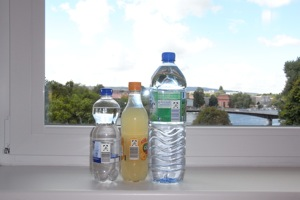
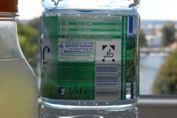
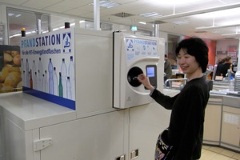
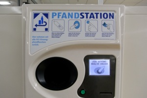
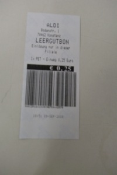

ドイツでは、瓶やペットボトルを買うときにデポジット料金が上乗せされて、飲み終わった容器を店に持って行くとデポジット料金が返却される仕組みがあります。このシステムで、容器の回収率を上げて、確実に容器をリサイクルします。瓶・ペットボトルのデポジット (DIYer in ドイツ)に、詳しく説明されています。以下の写真をクリックすると拡大されます。
|
 ペットボトルのデポジットマーク ドイツでは、瓶やペットボトルを買うときにデポジット料金が上乗せされて、飲み終わった容器を店に持って行くと返金される仕組みがあります。デポジットが上乗せされている商品には、このようなマークがあります。 |
 デポジットマーク拡大 デポジットマークを拡大して撮影しました。マークの下にバーコードがあり、返金するときに情報が読み取られます。 |
|
 ペットボトルのデポジット回収 とあるスーパーで、ペットボトルのデポジットを回収する機械にペットボトルを入れているところです。多くのスーパーで、このような機械が設置されています。機械がない店（ガソリンスタンド等）でも、店員にペットボトルを渡すと返金してもらえます。 |
 デポジット回収マシン デポジット回収マシンです。回収する方法が図示されています。瓶・ペットボトルを入れて、ボタンを押すと、受領証が出てきます。これをレジに持っていくことで、会計時にデポジット料金が差し引かれます。 |
|
 ペットボトルデポジットの受領書 この受領書をレジに持って行きます。この場合は、1.5lのペットボトル1本で25セントのデポジットでした。 |